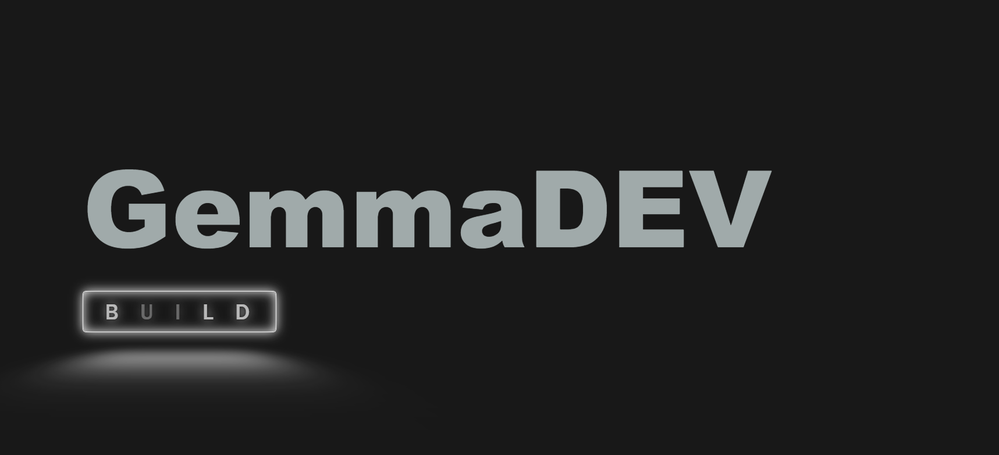

PROJECTS
-
Autonomous . Navigation & Exploration . Bot . Agent
Reinforcement Agent with Multi Modal Capacity, utilizing Large Language Models, CV algorithm, and a Reinforcement Learning system. Exploration bot that captures visual data, to adjust it's path towards the intended goal
. -
GemmaDev , Self Debugging Code Agent [ Paper accepted to ICACIS 2024 Springer Conference ] [download camera ready paper]
A Research Project. Fine-tuning State of the Art Large Language Models on code-task specific tasks, Exploration of an LM Agent to enable automation for code synthesis and self-debugging .
